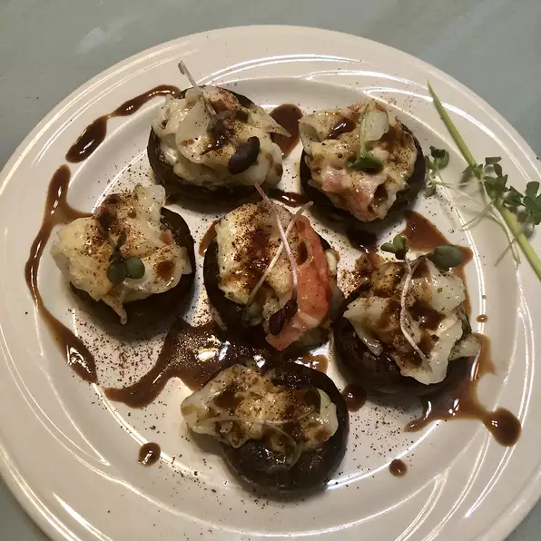

Crab Stuffed Mushrooms

This tasty appetizer seasoned with thyme, oregano, and savory. Choose good sized mushrooms, about 2 inches across. When cleaning mushrooms, don't run them under water. They are like little sponges, and will absorb it; just wipe them clean with a damp towel. The filling can be made with fresh, canned, or imitation crabmeat. If using canned, be sure to rinse it first.
Ingredients
- 1 pound fresh mushrooms
- 7 ounces crabmeat
- 5 green onions, thinly sliced
- 1/4 teaspoon dried thyme
- 1/4 teaspoon dried oregano
- ground black pepper to taste
- 1/4 cup graded Parmesan cheese
- 1/3 cup mayonnaise
- 3 tablespoons grated Parmesan cheese
- 1/4 teaspoon paprika
Directions
- Preheat the oven to 350 degrees F (175 degrees C).
- In a medium bowl, combine crabmeat, green onions, herbs, and pepper. Mix in mayonnaise and 1/4 cup Parmesan cheese until well combined. Refrigerate filling until ready for use.
- Wipe the mushrooms clean with a damp towel. Remove stems. Spoon out the gills and the base of the stem, making deep cups. Discard gills and stems. Fill the mushroom caps with rounded teaspoonfuls of filling, and place them in an ungreased shallow baking dish. Sprinkle tops with Parmesan and paprika.>
- Bake for 15 minutes. Remove from oven, and serve immediately